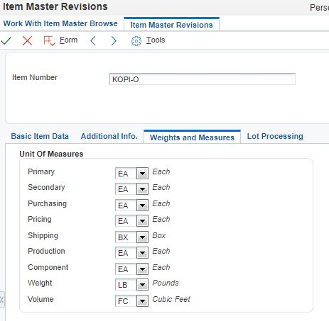
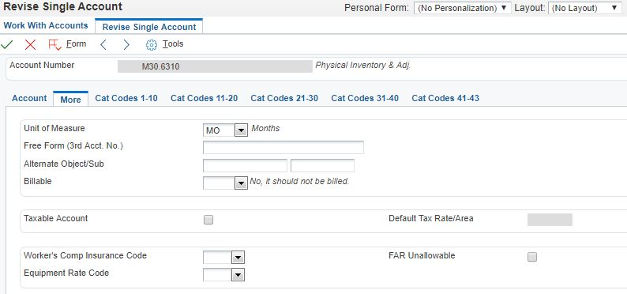

UOM Conversion EA to MO Unsuccessful Warning
ER Details:
Form P4112_W4112A
Control Id 1
Control Title Grid
Event Row is Exit & Changed - Asynch
Line No 106
BSFN Details:
Source File b4000520.c
Source Line 642
Error ID 085D
Note: You can get this information in your clicking a small yellow triangle in the right side of error box.
Error 2: 124K - Number of Units Invalid
CAUSE . . . . The number of units entered cannot be zero if the unit of measure is not blank. Alpha characters are the equivalent of zero in a numeric field.
RESOLUTION. . Enter a non-zero unit or blank out the unit of measure.
Number of Units Invalid Warning
ER Details:
Form P4112_W4112A
Control Id 1
Control Title Grid
Event Row is Exit & Changed - Asynch
Line No 106
BSFN Details:
Source File b0900049.c
Source Line 7156
Error ID 124K

and quantity available,
First of all, the second error is dependent on the first error. So the second error should not be shown in your fixing the first error. This mechanism applies to any transaction. So ensure that you are going to fix the first error. So by determining where the Unit of Measure 'MO' came is the clue to fix error.
In case you want to fix the issue yourself, the best resource is JDEDEBUG log (namely call object kernel log) and search for the error code appears in the screen by clicking yellow triangle guided above.

Based on above settings, the first error is natural because Inventory Master Business Function (XT4111Z1) tries to compute the Units based on 'F0901.UM'.
1. Go to Account Master P0911
2. Look for the account M30.6310
3. Remove/Correct Accounting Unit of Measure 'MO - Month' from Account Master. It is not reasonable convert EA (Each) to MO (Month) because there in relation.
4. Reset Database Cache because F0901 is a member of P98613/F98613
5. Try again.